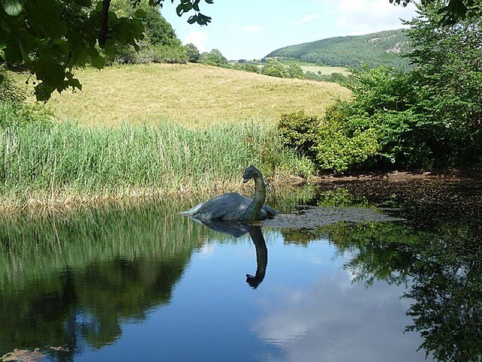
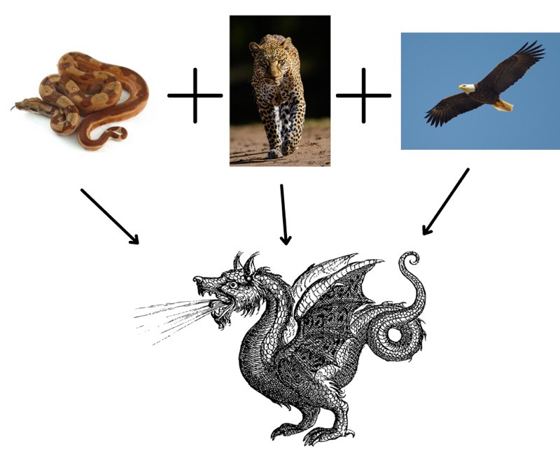
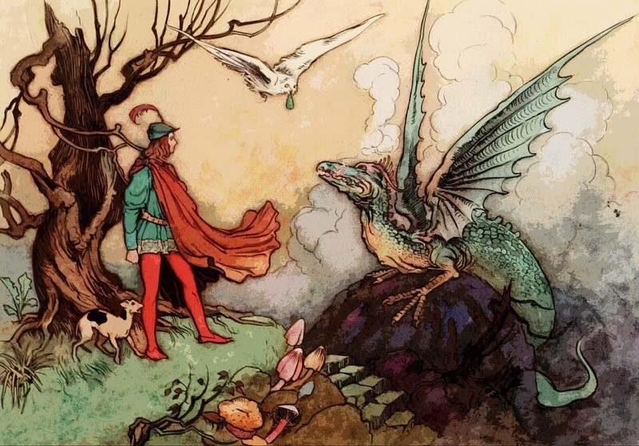
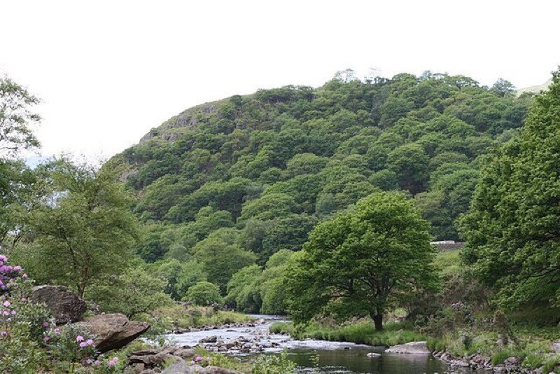

The Dragon: Everything You Need to Know About the Welsh National Animal
The red dragon, or “Y Ddraig Goch” in the native tongue, is a symbol of all things Welsh. Sitting front and centre on the national flag, it has proudly posed as the national animal for thousands of years. Like the unicorn in Scotland and the lion in England, there’s a grand story behind the beast. So, here it is.
Do dragons exist?
This is a question that baffles many. People have believed in dragons for as long as we can remember, and yet their origins are uncertain. Stories of fire-breathing serpents with wings span across the globe. And even now, you hear about sightings of the Loch Ness Monster in Scotland and the Seljordsvatnet in Norway.

Some say they were dinosaurs. But they can’t be, because dinosaurs died out way before humans even existed.
Others claim the dragon comes from a primal instinct. Our monkey forefathers’ main predators are eagles, leopards, and snakes. When put together, this combination of animals has a glaring likeness with what we understand as dragons.
A few argue we historically have used dragons as a scape goat for natural disasters and weather storms. Things we can’t control and couldn’t understand.

Where did dragons come from?
Dragons appear in all the continents, yet no two dragons are exactly the same. For example, the Chinese dragon is not the same as the Welsh. But the physical and psychological features are very similar.
The Egyptians depicted dragons in hieroglyphs. Zeus battled Typhon, an ancient Greek beast made of intertwined snakes, many heads, wings, and a fiery breath.
Dragon mythology seems to be on the mind of almost every culture.

What powers do dragons allegedly have?
Mythology depicts dragons living near or in water and caves. They’re said to manipulate the rain, but not enjoy being caught in it. They can breathe fire, fly, and are exceptional babysitters for gold and riches.
What about the Welsh dragon?
The Welsh word ‘draig’ means dragon, but also ‘warrior’ or ‘leader’. And the first tale of the ‘Y Ddraig Goch’ (the red dragon) was written around 828 A.D.
The legend begins with two battling dragons, one was white, the other red. King Lludd had trapped them in Dinas Emrys hill for thousands of years.
One day, King Vortigern decided to construct his new castle on this hill. He didn’t know the dragons resided there. And every morning, he'd wake up and his castle had been mysteriously destroyed. What was happening to his castle? He was bewildered and sought advice from those closest to him.
They instructed him to track down a boy with no father and use him as an offering. To Vortigern’s surprise, the boy he located was young Merlin, the most enlightened wizard to ever exist. Merlin wasn’t too keen on being sacrificed to keep the king’s construction project running smoothly. So, he unveils the truth about the two dragons.
Vortigern dug up the hill and released the dragons. The pair continued their battle until the red dragon was victorious; Merlin identified this dragon as the representative of the people of Vortigern. The white dragon was the representative for the Saxons. Vortigern’s people were the British who couldn’t be defeated by the Saxons. And this is how the Welsh people came to be.
Where can I see dragons in Wales?
The red dragon is the ultimate Welsh symbol. It’s on the flag, used by the Welsh Government, Visit Wales, and a bunch of sports teams. For those of you not of faint heart, you can try and see if you can track a dragon down.
1. Dinas Emrys

This is where the story of the Welsh red dragon began and there are still remains from Vortigern’s castle. It’s a superb site to explore, with rocks to climb, masses of greenery, and a fantastic view of southern Lyn Dinas in Snowdonia. What more could you want from a dragon quest?
2. Llyn Barfog
The gorgeous ‘bearded lake’ got its name from the encompassing rushes. Located at the top of the northern banks of the River Dyfi, also in Snowdonia. It is swimming in tales of King Arthur and that of a monster. People say it’s the primary residence of the Afanc. A humongous human-eating crocodile with demonic tendencies. Close by you can practice your dragon call at echo point and see if Afanc comes out to play.
3. Pistyll Rhaeadr Waterfall
The breath-taking waterfall is situated in the Berwyn Mountains and will cast a spell on you. It’s the highest in stature single-drop waterfall in Great Britain and has a magical past. This powerful body of water is home to a dragon named Gwbyr who munched on human bones. The dragon was defeated, so you might have to survive with living another day.
4. Caerphilly Castle
A mesmerising Medieval fortification found in South Wales that kept dragons for sport. It was built in the 13th century and is the biggest castle in Wales. It was an important tool in attempts to keep control of Glamorgan. And artificial lakes encompass the fortification, which make it look like something out of a fairy tale. You’ll encounter a dragon here in the Cadw’s dragon brood for sure.
Can I see dragons on a Rabbie's tour?
Yes, there are variety of tours departing from London and Manchester that visit Wales. They range from one to eight days, so there is ample opportunity for you to hunt for dragons on your travels.